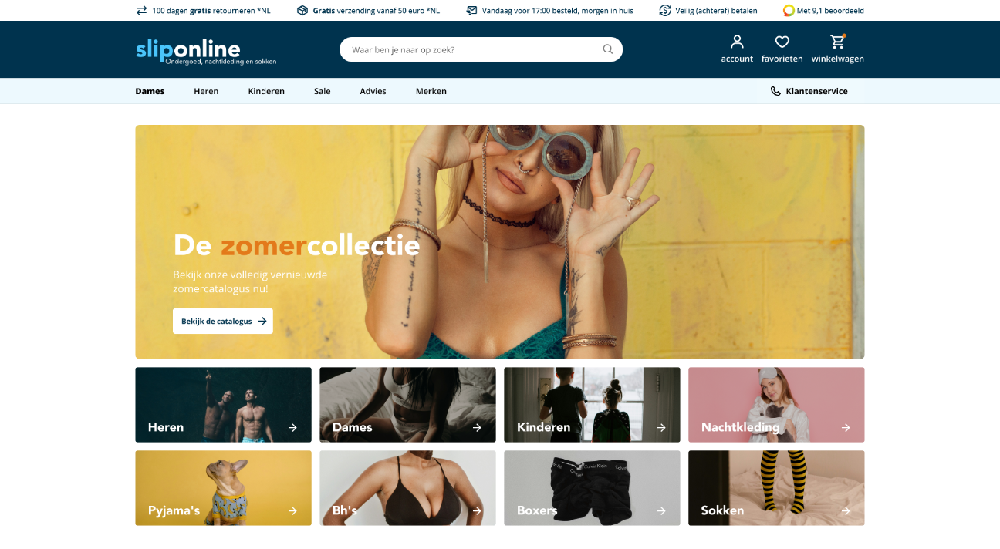
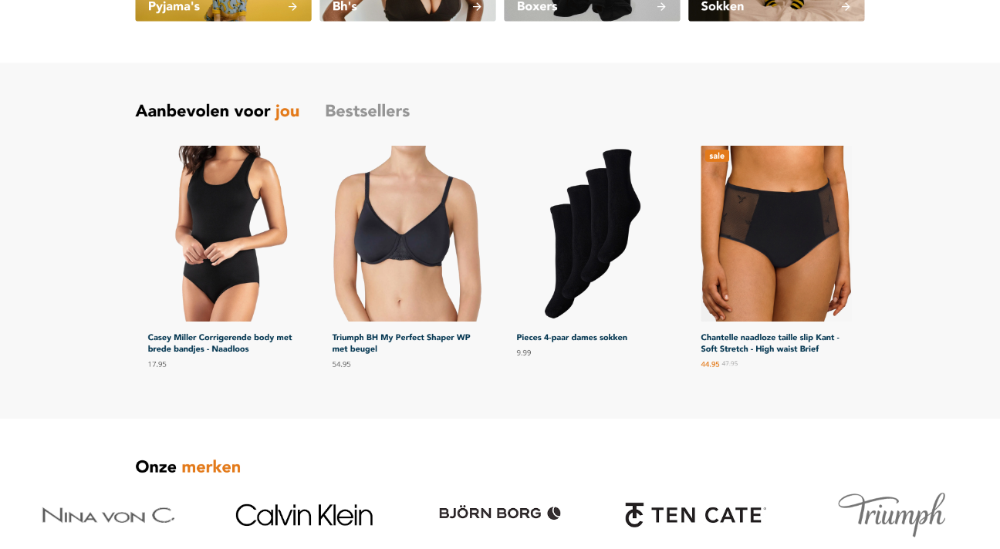
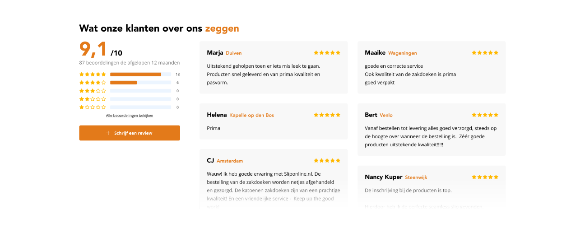

Sliponline
08/2024
Ideation
UX
UI
A lot of our customers at Shopmonkey take on a ‘Grow membership’ which means that over time we will slowly continue developing their websites. These are some of the items I’ve designed for Sliponline arrow_outward during that time.
Logo & colors
Sliponline used to feature a striking cyan color on white backgrounds, which was starting to feel a little outdated. The combination is bright together, so bright it stuggles with contrast between the two, so we dialled the cyan back to a navy color and we brought the contrasting orange they sparsely used to the foreground more. While we did this we also redid their logo to be more modern.
Home page
With the new color palette and logo we redid their homepage.
Recommended products
Reduced visual noise to focus on the product
Reviews
New and improved
